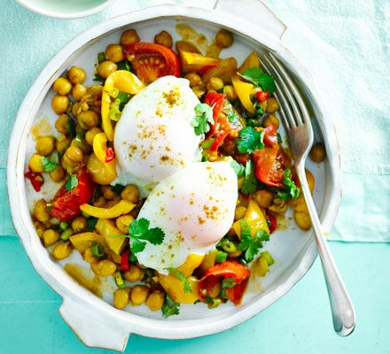

Vegetarian Indian chickpeas with poached eggs

Description
Ingredients
- 1 tbsp rapeseed oil
- 2 garlic cloves, chopped
- 1 yellow pepper, deseeded and diced
- ½ - 1 red chilli, deseeded and chopped
- ½ bunch spring onions (about 5), tops and whites sliced but kept separate
- 1 tsp cumin, plus a little extra to serve (optional)
- 1 tsp coriander
- ½ tsp turmeric
- 3 tomatoes, cut into wedges
- ⅓ pack coriander, chopped
- 400g can chickpeas in water, drained but liquid reserved
- ½ tsp reduced-salt bouillon powder (we used Marigold)
- 4 large eggs
Steps
- Heat the oil in a non-stick sauté pan, add the garlic, pepper, chilli and the whites from the spring onions, and fry for 5 mins over a medium-high heat. Meanwhile, put a large pan of water on to boil.
- Add the spices, tomatoes, most of the coriander and the chickpeas to the sauté pan and cook for 1-2 mins more. Stir in the bouillon powder and enough liquid from the chickpeas to moisten everything, and leave to simmer gently.
- Once the water is at a rolling boil, crack in your eggs and poach for 2 mins, then remove with a slotted spoon. Stir the spring onion tops into the chickpeas, then very lightly crush a few of the chickpeas with a fork or potato masher. Spoon the chickpea mixture onto plates, scatter with the reserved coriander and top with the eggs. Serve with an extra sprinkle of cumin, if you like.